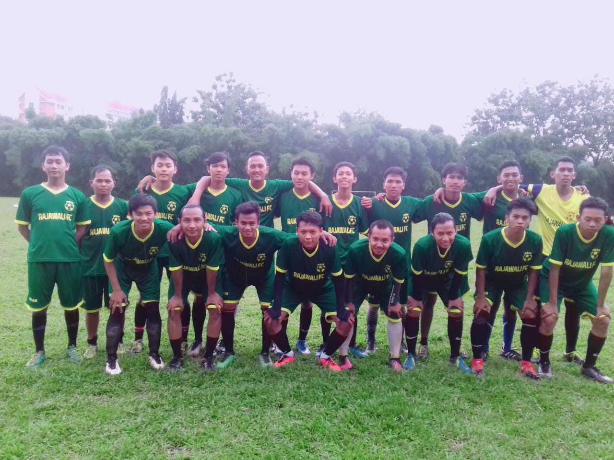
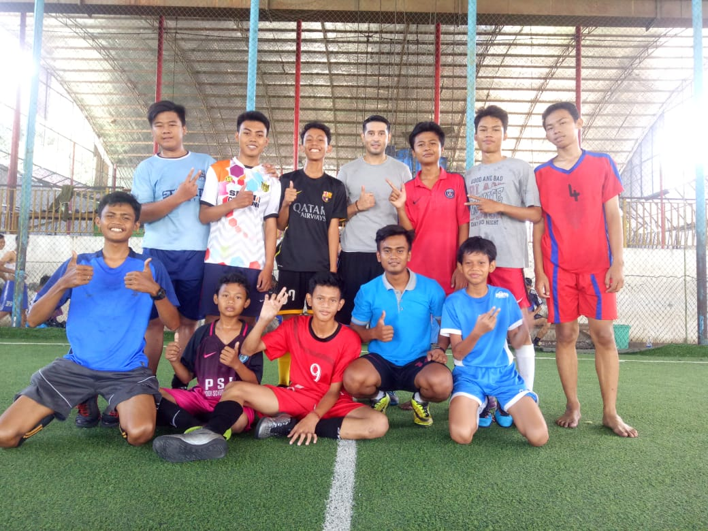

Cita cita saya adalah menjadi pemain sepak bola profesional. Setiap ada kesempatan , saya selalu melakukan hobi saya yaitu Bermain sepak bola. Biasanya saya bermain dengan teman teman saya. Kalau hobi saya sih , bermainnya di mana saja. Sebenarnya saya tidak bisa Bermain bola. Tetapi karna saya rajin berlatih , sekarang inshaAllah saya sudah bisa Bermain bola. Kalau kita Bermain bola harus ada perlengkapan untuk Bermain bola. Perlengkapan Bermain bola adalah baju ( jersey ) , sepatu bola, kaos kaki, deker, celana bola, tas sepatu. Sebenarnya Bermain bola itu mudah , kalau kita belajar terus pasti bisa. Bila Bermain bola saya lebih suka menggunakan gaya katak. Bermain bola dengan gaya katak itu adalah Bermain bola meniru gerakan katak. Saya ingin sekali kemampuan saya dalam Bermain bola lebih meningkat. Selain itu, saya juga ingin seperti Cristiano Ronaldo, Lionel Messi, Neymar Jr., dan para pesepak bola dunia lainnya. Karena cita-cita saya adalah menjadi seorang pemain sepak bola profesional.sekian ya temen temennn.
Dan Berikut adalah beberapa foto saya saat bermain sepak bola

